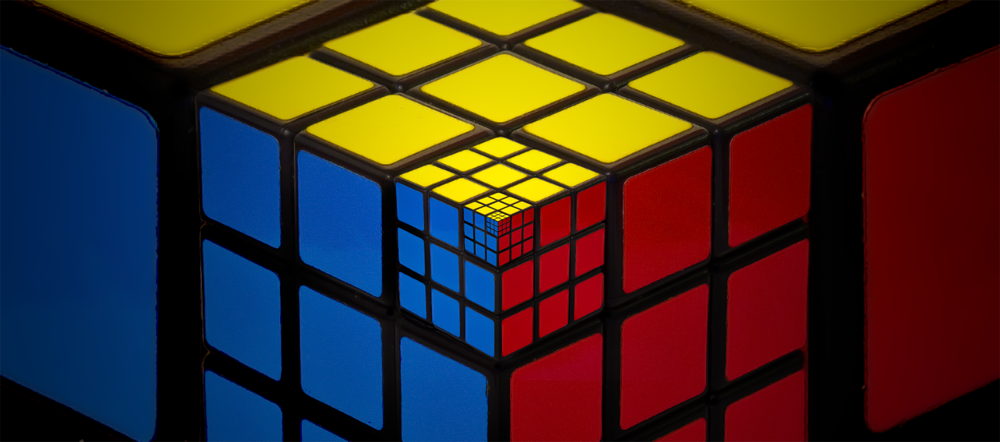
Estadísticas
TIMER SPEEDCUBING
Plano 2D (Desplegado)
Modelo 3D Interactivo
Toca la pantalla o presiona Espacio para Iniciar / Pausar
Presiona R para Reiniciar tiempo actual
Historial de Resoluciones
- Aún no has registrado ninguna resolución.
NOTICIAS
UN RÉCORD MUNDIAL A SUS 9 AÑOS |
Teodor Zajder, de Polonia, logró romper la barrera de los tres segundos al resolver el Cubo de Rubik. El talentoso niño, que tiene solo nueve años, ha causado una gran sensación resolviendo el cubo en 2.76 segundos. |

|
Pinchar en la imagen para acceder a la noticia. |
La niña de 6 años que bate el récord del Cubo Rubik 2 veces en 3 días |
El Cubo Rubik en solo 4,27 segundos. Esa es la hazaña que logró, con 6 años, Lian Yunzhi. En solo tres días, la niña batió el récord mundial femenino dos veces e hizo historia al convertirse en la única competidora en resolver el famoso y colorido cubo en un tiempo promedio inferior a 4,5 segundos. En el último año, Lian ha dedicado entre dos y tres horas diarias a practicar algoritmos buscando soluciones para resolver el cubo. |

|
Pinchar en la imagen para acceder a la noticia. |
CONCEPTOS BÁSICOS
Fundamentos para resolver el Cubo de Rubik
1. Anatomía y Estructura del Cubo
El cubo de Rubik 3x3 está compuesto por 26 piezas visibles organizadas en tres tipos:
- Centros (6 piezas): Tienen una sola pegatina. Estructuralmente están fijos al núcleo interno y determinan el color definitivo de cada cara. No cambian de posición relativa entre sí.
- Aristas (12 piezas): Tienen dos pegatinas y se sitúan entre dos centros.
- Esquinas (8 piezas): Tienen tres pegatinas y ocupan las esquinas del rompecabezas.
Esquema de colores estándar (WCA): El blanco es opuesto al amarillo, el verde al azul, y el rojo al naranja. Con el blanco arriba y el verde al frente, el color rojo siempre queda a la derecha.

2. Notación Internacional (WCA)
Para seguir algoritmos y guías de resolución se utiliza la notación estándar basada en las iniciales de las caras en inglés:
U(Up) - Cara superior |D(Down) - Cara inferiorF(Front) - Cara frontal |B(Back) - Cara posteriorR(Right) - Cara derecha |L(Left) - Cara izquierda
Modificadores de giro: La letra sola significa un giro de 90° en sentido horario. Si lleva comilla (ej. R'), el giro es antihorario. Si lleva un '2' (ej. U2), se realiza un doble giro (180°).
3. Estructura por Capas y la "Corona"
El aprendizaje se fundamenta en el método Layer-by-Layer (Capa por Capa), resolviendo el cubo por tres niveles horizontales de abajo hacia arriba en lugar de completarlo cara por cara.
Para avanzar correctamente es vital comprender la Corona: no basta con completar los colores de una cara (como la blanca), sino que los colores laterales de esas piezas deben coincidir perfectamente con los centros adyacentes.

4. Tipos de Movimientos y Algoritmos Base
Existen dos acciones fundamentales sobre las piezas:
- Orientación: Rotar una pieza sobre su propio eje para que el color correcto apunte hacia arriba o hacia la cara adecuada.
- Permutación: Trasladar una pieza de un lugar a otro dentro del cubo.
Un algoritmo es una secuencia ordenada de giros que modifica piezas específicas sin desarmar lo que ya se ha resuelto. El disparador o trigger más conocido es el Sexy Move (R U R' U'), fundamental por su rapidez e integración en fases más avanzadas como CFOP.
5. Paridad y Familias de Rompecabezas
Los rompecabezas se clasifican según su orden:
- Cubos Impares (3x3, 5x5): Tienen centros fijos inamovibles que sirven de guía continua.
- Cubos Pares (2x2, 4x4): Carecen de centros fijos y pueden presentar paridades (estados o bloqueos físicos imposibles de ver en un 3x3).
Mediante el principio de reducción, los cubos grandes (4x4, 5x5, Megaminx) se resuelven agrupando centros y aristas hasta convertirlos conceptualmente en un cubo 3x3 tradicional.


6. ¿Por dónde empezar? Hoja de Ruta Recomendada
Aprender a resolver el cubo de Rubik es un proceso progresivo. Sigue este orden estructurado:
- Método Principiante (Capa por Capa / LBL): Punto de partida indispensable con 5 o 6 algoritmos sencillos.
- Transición a CFOP / Fridrich Reducido (4LL): F2L Intuitivo, 2-Look OLL (9 algoritmos) y 2-Look PLL (6 algoritmos).
- CFOP Completo: Full PLL (21 algoritmos) y Full OLL (57 algoritmos).
- Submétodos Avanzados y Sets de Optimización: COLL, WV, SV, VLS y ZBLL.
Para afianzarlos correctamente en la memoria muscular: aprende máximo 1 algoritmo al día, ejecútalo despacio, descompón el algoritmo en triggers (ej. R U R' U') y practica la repetición espaciada.
NOTACIÓN OFICIAL WCA
1. Capas Principales (3x3)
Para interpretar un algoritmo, primero sostenemos el cubo en una orientación fija. Cada letra representa una cara basada en sus iniciales en inglés. El giro estándar (la letra sola) se realiza en sentido horario mirando esa cara de frente.
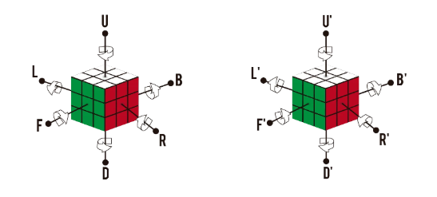
U(Up): Capa SuperiorD(Down): Capa InferiorF(Front): Capa FrontalB(Back): Capa TraseraR(Right): Capa DerechaL(Left): Capa Izquierda
B o D, imagínate mirando esa cara directamente de frente y gira en la dirección de las agujas del reloj.
2. Modificadores de Giro
Cualquier capa puede tener variaciones según los símbolos que acompañan a la letra:
- Sentido horario (ej.
U): Giro de 90° a favor de las agujas del reloj. - Sentido antihorario (ej.
U'): Lleva un apóstrofe (prime). Giro de 90° en contra de las agujas del reloj. - Doble giro (ej.
U2): Giro de 180° en cualquier sentido. - Capa doble (ej.
Uwou): Gira la capa indicada junto con la capa adyacente interna.

3. Capas Centrales (M, E, S)
Se utilizan principalmente en métodos avanzados (como Roux) o algoritmos específicos:
- Capa
M(Middle): Situada entreLyR. Su sentido horario sigue a la caraL(hacia abajo). - Capa
E(Equator): Situada entreUyD. Su sentido horario sigue a la caraD(hacia la derecha). - Capa
S(Standing): Situada entreFyB. Su sentido horario sigue a la caraF.

4. Rotaciones del Cubo (Ejes X, Y, Z)
Indican que se debe reorientar el cubo completo en el espacio sin deshacer ninguna capa:
- Eje
x: Rota todo el cubo siguiendo el sentido de la caraR(hacia arriba/atrás). - Eje
y: Rota todo el cubo siguiendo el sentido de la caraU(hacia la izquierda). - Eje
z: Rota todo el cubo siguiendo el sentido de la caraF(hacia la derecha/de lado).

TUTORIAL 2X2
- Armar la Primera Capa. El objetivo es juntar las 4 esquinas blancas, asegurándote de que los colores laterales adyacentes también coincidan entre sí.
- Busca la pieza base: Localiza una esquina blanca y colócala en la esquina superior izquierda de la cara frontal.
- Ubica la siguiente pieza: Busca en el cubo otra esquina que tenga blanco y el mismo color lateral que tu pieza base.
- Inserta la pieza: Colócala justo debajo de donde debe ir y aplica la secuencia de inserción desde la derecha:
- Secuencia de inserción: R' D' R D (Repite de 1 a 5 veces).
- Orientar la Capa Superior. Voltea el cubo de modo que la cara blanca quede abajo. El objetivo es hacer que todas las pegatinas amarillas queden mirando hacia arriba.
- Algoritmo de orientación: R U R' U R U2 R'
- Si tienes 1 esquina amarilla arriba: Colócala en la esquina inferior izquierda de la cara superior y ejecuta el algoritmo.
- Si tienes 0 esquinas amarillas arriba: Busca una pieza con pegatina amarilla en la cara lateral izquierda mirando hacia ti y ejecuta el algoritmo.
- Si tienes 2 esquinas amarillas arriba: Coloca las dos esquinas amarillas en la parte posterior y ejecuta el algoritmo.
- Permutar la Capa Superior. Con la cara amarilla completa arriba y la blanca abajo, observa los laterales:
- Caso A: Tienes 2 esquinas contiguas del mismo color.
- Gira la capa superior hasta hacerlas coincidir con su color y ponlas hacia atrás.
- Algoritmo de permutación: R' F R' B2 R F' R' B2 R2
- Caso B: Ninguna esquina contigua coincide.
- Aplica R' F R' B2 R F' R' B2 R2 desde cualquier posición.
- Esto creará una pareja coincidente (Caso A). Alinea hacia atrás y repite.
- Caso A: Tienes 2 esquinas contiguas del mismo color.


TUTORIAL CUBO 3X3
Parte 1: Método Principiante (Paso a Paso)
El método por capas (Layer-by-Layer) es la forma más fácil e intuitiva de aprender a resolver el cubo por primera vez. Consta de 7 sencillos pasos:
1 Cruz Blanca (con centros alineados)
El objetivo es formar una cruz blanca en la cara inferior haciendo que el segundo color de cada arista coincida perfectamente con su centro lateral.
- Truco de la Margarita: Mantén el centro amarillo arriba. Busca las 4 aristas blancas y colócalas alrededor del centro amarillo.
- Bajar la arista: Alinea el color lateral con su centro y gira esa cara 180° (
F2). Repite con las 4 aristas.

2 Esquinas Blancas (Primera Capa)
Con la cruz blanca hacia abajo, sitúa cada esquina blanca encima de su hueco correspondiente y repite R U R' U' hasta insertarla correctamente.

3 Segunda Capa (Capa Central)
Inserta las aristas sin amarillo formando una "T" con su centro:
- Inserción a la Derecha: U R U' R' U' F' U F
- Inserción a la Izquierda: U' L' U L U F U' F'

4 Cruz Amarilla
Aplica F R U R' U' F' para pasar de Punto ➔ "L" invertida ➔ Línea horizontal ➔ Cruz completa.

5 Alinear Cruz Amarilla
Busca 2 aristas coincidentes con sus centros, pon una atrás y otra a la derecha, y ejecuta: R U R' U R U2 R' U

6 Colocar Esquinas Amarillas
Con una esquina bien ubicada en la posición superior-derecha-frontal, aplica: U R U' L' U R' U' L

7 Orientar Esquinas Amarillas
Aplica R' D' R D consecutivamente hasta orientar cada esquina. Gira solo la capa superior para traer la siguiente esquina al mismo punto sin rotar el cubo.
Parte 2: Método CFOP Reducido (4LL)
Guía rápida para la transición del método principiante al avanzado aprendiendo solo 15 algoritmos clave.
4LL Resumen de Fases
- Cross: Cruz blanca directa abajo en la inspección.
- F2L Intuitivo: Unir parejas de esquina y arista.
- 2-Look OLL: Cruz superior (3 casos) + Esquinas superiores (7 casos).
- 2-Look PLL: Esquinas finales (T / Y) + Aristas finales (Ua / Ub / H / Z).
Parte 3: Método CFOP Avanzado Completo (Full F2L + Full OLL + Full PLL)
Compendio total de los 119 casos oficiales de CFOP Avanzado. Cada caso cuenta con su visor 3D en vivo cargado desarmado en el estado inicial exacto.
F2L 1. First 2 Layers Avanzado (41 Casos Completos)
Inserción simultánea de las 4 parejas de esquina y arista de los dos primeros niveles.
F2L Básicos y Fáciles (Casos 1 al 6)
F2L 1
F2L 2
F2L 3
F2L 4
F2L 5
F2L 6
F2L con Arista en la Capa Superior (Casos 7 al 16)
F2L 7
F2L 8
F2L 9
F2L 10
F2L 11
F2L 12
F2L 13
F2L 14
F2L 15
F2L 16
F2L Esquina Apuntando hacia Arriba (Casos 17 al 24)
F2L 17
F2L 18
F2L 19
F2L 20
F2L 21
F2L 22
F2L 23
F2L 24
F2L Piezas Atrapadas en Ranuras (Casos 25 al 41)
F2L 25
F2L 26
F2L 27
F2L 28
F2L 29
F2L 30
F2L 31
F2L 32
F2L 33
F2L 34
F2L 35
F2L 36
F2L 37
F2L 38
F2L 39
F2L 40
F2L 41
OLL 2. Orientation of the Last Layer (57 Casos Completos)
Orientación directa de todas las pegatinas amarillas en un solo movimiento.
1. Puntos (OLL 1 al 8)
OLL 1
OLL 2
OLL 3
OLL 4
OLL 5
OLL 6
OLL 7
OLL 8
2. Formas de Rayos y Cuadrados (OLL 9 al 20)
OLL 9
OLL 10
OLL 11
OLL 12
OLL 13
OLL 14
OLL 15
OLL 16
OLL 17
OLL 18
OLL 19
OLL 20
3. Cruz Hecha / OCLL (OLL 21 al 27)
OLL 21
OLL 22
OLL 23
OLL 24
OLL 25
OLL 26
OLL 27
4. Formas de C, T, I y P (OLL 28 al 46)
OLL 28
OLL 29
OLL 30
OLL 31
OLL 32
OLL 33
OLL 34
OLL 35
OLL 36
OLL 37
OLL 38
OLL 39
OLL 40
OLL 41
OLL 42
OLL 43
OLL 44
OLL 45
OLL 46
5. Formas de L y Grandes (OLL 47 al 57)
OLL 47
OLL 48
OLL 49
OLL 50
OLL 51
OLL 52
OLL 53
OLL 54
OLL 55
OLL 56
OLL 57
PLL 3. Permutation of the Last Layer (21 Casos Completos)
Permutación y ordenación final de todas las esquinas y aristas orientadas.
1. Solo Aristas (4 Casos)
Ua Perm
Ub Perm
H Perm
Z Perm
2. Solo Esquinas (3 Casos)
Aa Perm
Ab Perm
E Perm
3. Esquinas y Aristas (14 Casos)
F Perm
Ga Perm
Gb Perm
Gc Perm
Gd Perm
Ja Perm
Jb Perm
Ra Perm
Rb Perm
T Perm
V Perm
Y Perm
Na Perm
Nb Perm
TUTORIAL 4X4
- Resolver los Centros
- En el 4x4 los centros no son fijos (cada centro consta de 4 piezas). El objetivo es formar bloques de 2x2 para cada color manteniendo la estructura del esquema oficial de colores (Blanco opuesto a Amarillo, y alrededor con el blanco abajo: Verde, Rojo, Azul, Naranja en sentido horario).
- Centro Blanco: Junta 2 barras de 2 piezas blancas y únelas en la cara superior.
- Centro Amarillo: Pon el blanco abajo y arma el centro amarillo arriba usando el movimiento Rw U Rw' para no deshacer el blanco.
- Centros Laterales: Pon el blanco a la izquierda y el amarillo a la derecha. Completa en orden los centros laterales respetando el esquema de colores.
- Emparejar Aristas (Crear los 12 Bloques de Aristas)
- Cada arista en el 4x4 está dividida en 2 piezas. Debes juntar todas las parejas del mismo color sin romper los centros.
- Busca dos piezas de arista iguales y colócalas en la cara frontal, una en el lado izquierdo y otra en el derecho, de forma que queden en línea horizontal alineadas (una frente a la otra).
- Si están en diagonal, orienta una de ellas con R U R' F R' F' R.
- Aplica la secuencia de emparejamiento: Uw' (R U R' F R' F' R) Uw
- Repite este proceso con las 12 parejas de aristas.
- Resolver como un 3x3
- Una vez formados los 6 centros y las 12 aristas dobles, el cubo se comporta exactamente como un 3x3. Respeta todos los pasos del método principiante del 3x3 (Cruz blanca, esquinas, capa central, etc.).
- Paridad de la Cruz Amarilla (Paridad de Arista / OLL)
- En el 4x4 puede surgir una situación imposible en un 3x3: una sola arista invertida en la cruz amarilla. Si al intentar hacer la cruz amarilla ves un número impar de aristas orientadas (1 o 3 en lugar de 0, 2 o 4):
- Coloca la arista con la paridad en la parte frontal-superior y aplica: Rw U2 x Rw U2 Rw U2 Rw' U2 Lw U2 Rw' U2 Rw U2 Rw' U2 Rw' (Donde x significa rotar todo el cubo hacia arriba).
- Paridad de Permutación (Paridad de PLL)
- Al llegar al final, puede ocurrir otra situación imposible en un 3x3: dos esquinas o dos aristas deben intercambiarse entre sí.
- Coloca las dos piezas a intercambiar de frente y aplica: r2 U2 r2 Uw2 r2 Uw2 (Donde r representa mover únicamente la capa interna derecha).
- Ajustes Finales de 3x3
- Aplica el último algoritmo de permutación o colocación del 3x3 para dejar el cubo completamente resuelto.
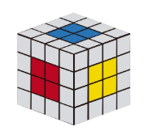
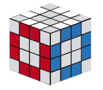
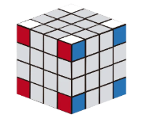
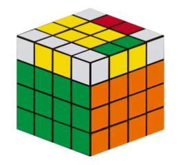
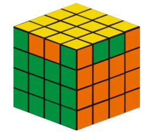
TUTORIAL 5X5
- Resolver los Centros (Bloques de 3x3)
- Centro Blanco y Centro Amarillo:
- Forma primero una barra central de 1x3 (usando el centro fijo).
- Crea dos barras laterales de 1x3 y únelas a la barra central para formar un bloque de 3x3.
- Haz lo mismo con el centro amarillo opuesto usando Rw U Rw' para no deshacer el blanco.
- Cuatro Centros Laterales:
- Con el blanco y el amarillo en los lados izquierdo y derecho, resuelve los centros adyacentes uno a uno mediante la creación e inserción de barras de 1x3.
- Centro Blanco y Centro Amarillo:
- Emparejar Aristas (Crear los 12 Bloques de 3 piezas)
- Emparejar las primeras 8 o 10 aristas:
- Localiza la arista central del trío y colócala en el centro de la capa frontal.
- Trae las dos aristas laterales correspondientes a las capas adyacentes usando giros de capas internas (u o d).
- Guarda la arista armada en la capa superior (U) y reemplázala por una desordenada antes de regresar los centros con u' o d'.
- Emparejar las Últimas 2 Aristas (Paridad de Aristas):
- Cuando solo quedan 2 aristas compuestas por resolver, no hay aristas desarmadas libres para intercambiar.
- Coloca las dos aristas una frente a la otra alineadas horizontalmente. Si una de las piezas externas de la arista está invertida respecto a las demás, aplica el algoritmo de volteo de arista: Rw2 B2 U2 Lw U2 Rw' U2 Rw U2 F2 Rw F2 Lw' B2 Rw2
- Emparejar las primeras 8 o 10 aristas:
- Resolver como un 3x3 Estándar
- Trata los centros de 3x3 como piezas centrales individuales.
- Trata cada grupo de 3 aristas como si fuera una sola arista de un 3x3.
- Aplica todos los pasos del método de principiantes del 3x3 (Cruz, esquinas, capa central, cruz superior, etc.).
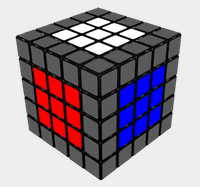
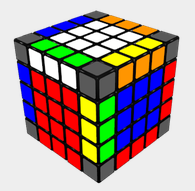
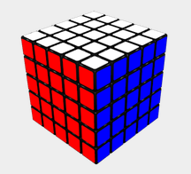
TUTORIAL PYRAMINX
- Orientar las Puntas (Esquinas Exteriores)
- Las 4 puntas piramidales giran de forma independiente y no afectan a ninguna otra pieza. Gira cada una de las 4 puntas exteriores hasta que coincidan con el color del bloque triangular inmediatamente inferior (los centros).
- Orientar los Centros de una Cara Base (La Cara Azul)
- En el Pyraminx, los centros son las piezas con 3 pegatinas situadas justo debajo de las puntas (tienen 1 sola cara visible por lado).
- Elige una cara base para empezar (habitualmente la Azul).
- Busca las 3 puntas que tienen el color azul.
- Gira las caras grandes para que las 3 pegatinas azules de los centros queden en la misma cara. Esto formará una figura tipo "hélice" o "trébol" en la cara base.
- Resolver la Primera Cara (Insertar las 3 Aristas Inferiores)
- Coloca la cara azul hacia abajo. Ahora debes insertar las 3 aristas azules (piezas con 2 colores) en la capa inferior.
- Busca en la capa superior una arista que contenga color azul y colócala sobre su posición correspondiente:
- Si la pegatina azul te mira a la izquierda, aplica la secuencia derecha: R U' R'
- Si la pegatina azul te mira a la derecha, aplica la secuencia izquierda: L' U L
- Si una arista azul está abajo pero girada o fuera de sitio, aplica R U' R' para subirla a la capa superior y luego insértala correctamente.
- Resolver la Capa Superior (Últimas 3 Aristas)
- Con la cara azul resuelta en la base, gira la punta superior (U) para alinear los centros superiores con sus caras correspondientes. Te quedarán solo 3 aristas por resolver en la parte superior:
- Giro cíclico de 3 aristas (Tres piezas fuera de sitio). Aplica la secuencia de "pescadito": R U R' U R U R' (Si no se resuelve a la primera, vuelve a aplicarlo una vez más).
- Dos aristas en su sitio pero volteadas sobre sí mismas. Coloca las dos aristas mal orientadas de frente y aplica: R' L R L' U' L U R'

TUTORIAL MEGAMINX
- Estrella Blanca (La Base)
- Mantiene el centro blanco en la cara inferior o frontal.
- Busca las 5 aristas blancas y únelas al centro blanco haciendo coincidir el segundo color de cada arista con su centro lateral (creando una estrella de 5 puntas en lugar de una cruz).
- Esquinas Blancas (Primera Capa)
- Busca las 5 esquinas que contienen color blanco.
- Coloca cada esquina sobre el hueco donde debe ir haciendo coincidir sus 3 colores.
- Inserta la esquina en su sitio usando la secuencia: R U R' U' (Repite de 1 a 5 veces hasta que el blanco baje orientado).
- Capa Central e Inferior (Primera Banda / F2L Extendido)
- Ahora debes resolver las caras laterales adyacentes a la base blanca (que forman la mitad inferior del rompecabezas):
- Insertar Aristas de la primera banda: Coloca las aristas que van entre los centros adyacentes a la cara blanca usando el algoritmo de aristas del 3x3:
- Insertar a la derecha: U R U' R' U' F' U F
- Insertar a la izquierda: U' L' U L U F U' F'
- Completar las caras laterales inferiores: Trabaja de abajo hacia arriba rellenando las esquinas y aristas adyacentes a la cara blanca hasta que solo quede la cara superior (generalmente la cara Gris) sin resolver.
- Insertar Aristas de la primera banda: Coloca las aristas que van entre los centros adyacentes a la cara blanca usando el algoritmo de aristas del 3x3:
- Ahora debes resolver las caras laterales adyacentes a la base blanca (que forman la mitad inferior del rompecabezas):
- Estrella Gris (Capa Superior)
- Algoritmo para la estrella: F R U R' U' F'
- Aplícalo desde diferentes ángulos hasta lograr que las 5 puntas grises queden orientadas en la cara superior.
- Alinear la Estrella Gris con los Centros
- Gira la cara superior (U) para ver cuántas aristas de la estrella coinciden con los centros laterales adyacentes:
- Busca que al menos 2 aristas continuas coincidan con sus centros laterales.
- Coloca las aristas correctas en la parte frontal e izquierda y aplica el algoritmo de permutación de aristas: R U R' U R U3 R' U
- Repite hasta que las 5 puntas de la estrella coincidan con sus 5 centros laterales.
- Colocar y Orientar Esquinas Grises (Resolver el Megaminx)
- Colocar las Esquinas en su Sitio:
- Busca una esquina que esté en su posición correcta (aunque esté girada).
- Usa el algoritmo para permutar las esquinas restantes: U R U' L' U R' U' L
- Orientar las Esquinas:
- Voltea el Megaminx para que la cara gris quede abajo.
- Trae una esquina gris no orientada a la posición inferior derecha.
- Repite la secuencia R U R' U' hasta que el gris quede mirando hacia abajo.
- Gira únicamente la cara inferior (D) para colocar la siguiente esquina sin resolver en el mismo hueco y repite la secuencia hasta armar todo el Megaminx.
- Colocar las Esquinas en su Sitio:


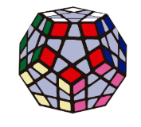